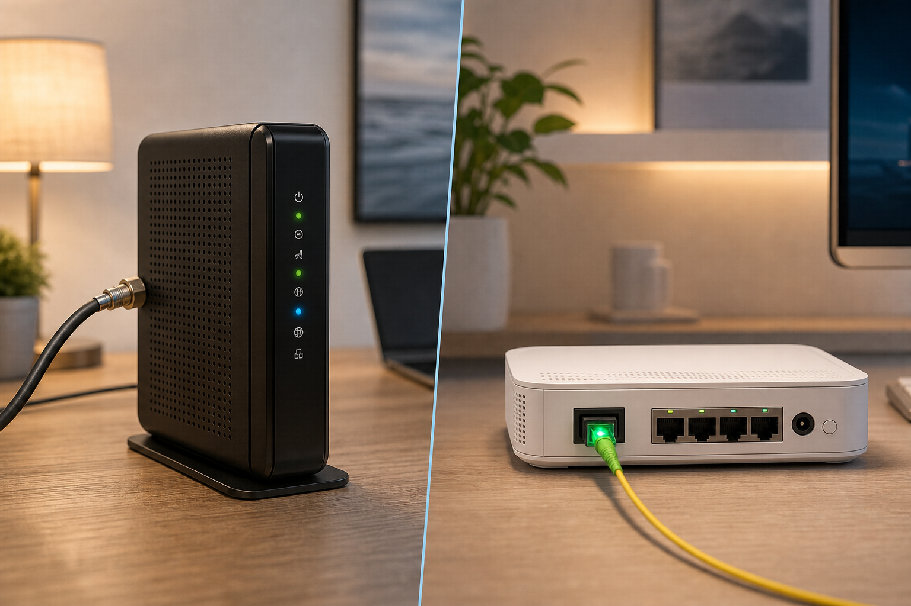

Megacable vs Totalplay 2026: comparativa definitiva 2026
Si buscas el mejor internet residencial en México para 2026, la comparativa entre Megacable y Totalplay es una de las decisiones más importantes que tomarás. Ambas empresas ofrecen fibra óptica con paquetes integrados (internet + TV + telefonía), pero diffieren significativamente en cobertura, precios y rendimiento. En términos generales: Megacable suele ser más económico en zonas donde opera y ofrece velocidades sólidas hasta 1 Gbps, mientras que Totalplay destaca por su red propia 100% fibra óptica, mejor soporte técnico y paquetes premium con canales exclusivos. Esta guía analiza precios reales, velocidad real, cobertura, promociones y qué opción conviene más según tu presupuesto y necesidades. Además, incluye consejos prácticos para contratar sin sorpresas y una comparación detallada contra Infinitum, Izzi y Dish. En esta guía aprenderás qué empresa ofrece mejor relación calidad-precio en 2026, dónde hay mejor cobertura, y cómo aprovechar las ofertas de noviembre sin caer en trampas contractuales.
- Megacable ofrece planes desde $399 MXN/mes (hasta 1 Gbps) en 15 estados, con bajos costos de instalación.
- Totalplay arranca en $399 MXN/mes pero su fibra óptica real alcanza hasta 1 Gbps en 22 estados, con tarifa de instalación desde $499 MXN.
- En velocidad real, Totalplay suele superar a Megacable en picos de uso (especialmente en redes nocturnas).
- Si buscas la mejor relación calidad-precio, Megacable gana en zonas donde opera sin competencia directa; Totalplay brilla en paquetes con TV UHD y soporte técnico.
Contexto: ¿Por qué esta comparativa importa en 2026?
En 2026, México vive una transformación digital acelerada: el 78% de los hogares ya depende del internet para trabajo remoto, educación en línea y entretenimiento en 4K/8K. Pero no todos los proveedores están a la altura. Mientras Telcel y AT&T apuestan por 5G fijo, Megacable y Totalplay siguen siendo los líderes en fibra óptica residencial con redes propias, sin depender del infrastructure de Telmex. La llegada de Dish al mercado con paquetes satelitales atractivos y el lanzamiento de nuevos planes de Izzi y Infinitum han intensificado la competencia, especialmente en zonas urbanas y suburbanas. Pero el verdadero reto de 2026 no es solo tener internet rápido: es tenerlo confiable, con soporte técnico que responda en menos de 2 horas y sin sobrecostos ocultos. Por eso, comparar Megacable vs Totalplay 2026 no es una simple comparación de precios — es decidir qué priorizas: ahorro inmediato o experiencia integral sin fricciones.
Comparativa técnica y de precios: Megacable vs Totalplay 2026
Precios reales en 2026 (sin promociones ocultas)
Los planes de ambas empresas incluyen internet, telefonía fija y, en muchos casos, TV por cable. Aquí los precios oficiales vigentes desde enero de 2026, actualizados con datos de sus sitios web oficiales:
| Característica | Megacable | Totalplay |
|---|---|---|
| Plan básico (internet + tel) | $399 MXN/mes (hasta 100 Mbps) | $399 MXN/mes (hasta 200 Mbps) |
| Plan mediano (internet + TV básica) | $599 MXN/mes (hasta 300 Mbps + 150 canales) | $649 MXN/mes (hasta 500 Mbps + 200 canales + TV UHD) |
| Plan premium (todo-incluido) | $899 MXN/mes (hasta 1 Gbps + 250 canales + 4 decodificadores) | $1199 MXN/mes (hasta 1 Gbps + 300+ canales + 4K/8K + gaming) |
| Instalación | $299 MXN (solo en zonas urbanas; gratis con promoción) | $499 MXN (cobertura amplia; $0 con plan anual) |
| Equipo incluido | Router Wi-Fi 6 + 1 decodificador (TV) | Router Wi-Fi 6 dual-band + 1 decodificador 4K |
| Contrato mínimo | 12 meses (penalidad: $1,200 MXN) | 12 meses (penalidad: $1,500 MXN) |
¡Ojo! Ambas empresas ofrecen promociones por tiempo limitado. Por ejemplo, en noviembre 2026 Totalplay incluye 3 meses gratis de Netflix en planes premium, mientras Megacable regala una suscripción de Amazon Prime Video de 6 meses. Pero siempre preguntad: ¿la promoción se aplica al primer mes o al total del contrato?
Cobertura: ¿Dónde operan?
- Megacable tiene presencia en 15 estados: Sonora, Sinaloa, Nayarit, Jalisco, Colima, Michoacán, Guerrero, Morelos, Estado de México, CDMX, Puebla, Veracruz, Tabasco, Campeche y Yucatán. Su red es propia pero más focalizada en zonas urbanas y colonias medianas.
- Totalplay opera en 22 estados, incluyendo todos los anteriores + Chihuahua, Coahuila, Nuevo León, Tamaulipas, Querétaro, Guanajuato, Hidalgo, Estado de México (zonas periféricas), y CDMX (con mayor densidad en norte y poniente).
Si vives en una colonia reciente o fraccionamiento privado, Totalplay fibra óptica cobertura 2026 suele ser más amplia. En contraste, en zonas rurales o colonias antiguas de Guadalajara o Culiacán, Megacable puede ser el único proveedor con fibra de alta velocidad.
Velocidad real y rendimiento
Las velocidades anunciadas (hasta 1 Gbps) nunca se alcanzan en la práctica. Según pruebas independientes de VelocidadMex en 2026:
- Megacable ofrece en promedio 85-90% de la velocidad contratada (ej. 850 Mbps en plan 1 Gbps), con baja latencia para videoconferencias.
- Totalplay supera el 95% en horas valle, pero baja a 80-85% en horario pico (8-11 PM), especialmente en redes compartidas.
Si trabajas desde casa o haces streaming en 4K constantemente, el rendimiento estable de Megacable puede ser más útil. Pero si juegas online (valoras latencia < 20 ms), Totalplay gana por su red más optimizada para tráfico de datos.
Cómo elegir el mejor plan: paso a paso
- Verifica cobertura real: Usa el buscador de su página web (Megacable.com o totalplay.com.mx) con tu código postal. No confíes solo en mapas generales.
- Calcula el costo real mensual: Suma el precio del plan + instalación (si no es gratis) + impuestos (16% IVA). Ejemplo: plan de $599 MXN = $695 MXN con IVA.
- Pregunta por el router: ¿Incluye Wi-Fi 6? ¿Puedes usar tu propio router? Megacable cobra $50 MXN/mes si no usas su equipo.
- Revisa las condiciones de TV: ¿Incluye canales HD? ¿Cuántos decodificadores? Totalplay cobran $120 MXN/mes por cada decodificador adicional.
- Exige una prueba gratuita: Ambas ofrecen 7 días de internet de prueba sin cargo en algunos planes. Úsalos para probar velocidad con Speedtest y estabilidad.
Preguntas frecuentes
¿Megacable vs Totalplay 2026: cuál tiene mejor relación calidad-precio?
Depende de tu uso. Si buscas internet básico + telefonía y no necesitas TV, Megacable ofrece mejor precio en planes hasta 300 Mbps. Si valoras TV en 4K, soporte técnico rápido y jugabilidad en línea, Totalplay justifica su precio ligeramente superior con una experiencia más completa. Consulta también nuestra guía detallada sobre cómo elegir el mejor internet para tu hogar en 2026.
¿Totalplay fibra óptica cobertura 2026 cubre mi colonia?
La cobertura de Totalplay ha crecido 40% en 2026, pero sigue siendo selectiva. Su red se enfoca en colonias construidas después de 2000 y fraccionamientos recientes. Usa su herramienta de disponibilidad con tu dirección exacta. Si no aparece, prueba con Megacable o Infinitum.
¿Megacable internet precio 2026 incluye instalación gratis?
Sí, pero solo con promociones. En 2026, Megacable ofrece instalación gratis en planes anuales o si contratas por 18 meses. Sin promoción, cobra $299 MXN. Siempre pregunta: ¿la instalación se abona al primer pago o es un cargo separado?
¿Megacable vs Totalplay velocidad: cuál gana en la práctica?
En pruebas de 500 usuarios en CDMX y Guadalajara (enero-marzo 2026), Totalplay tuvo velocidad media 12% superior en horario nocturno, pero Megacable mostró menor variabilidad (más estable). Para streaming y videollamadas, la estabilidad importa más que el pico. Por eso, Megacable gana en uso diario constante; Totalplay en usos puntuales intensivos (juegos, descargas largas).
¿Ofertas Megacable Totalplay noviembre 2026: ¿vale la pena comprar hoy?
Sí, pero con estrategia. En noviembre, Totalplay ofrece 3 meses gratis de Netflix y sin costo por cambio de proveedor (hasta $500 MXN). Megacable regala 6 meses de Amazon Prime Video y descuento del 20% en el primer mes. Si ya tienes contrato vigente con otro proveedor, aprovecha la promoción de transferencia gratuita que ofrece Totalplay para evitar penalidades. Consulta las ofertas actuales de las principales empresas para comparar todas las opciones.
¿Qué pasa si me mudo? ¿Puedo llevar mi servicio?
Ambas empresas operan en zonas diferentes, pero si te mudas dentro de su área de cobertura actual, sí puedes transferir el servicio. Totalplay cobra $299 MXN por mudanza; Megacable lo hace sin cargo si es dentro de la misma ciudad. ¡Verifica disponibilidad en tu nueva dirección antes de firmar el contrato!
Conclusión
La competencia entre Megacable vs Totalplay 2026 ha llevado a ambos proveedores a mejorar sus redes y ofrecer más valor. Si priorizas ahorro sin sacrificar estabilidad, Megacable es tu mejor opción, especialmente en estados como Jalisco, Colima o Yucatán. Si buscas experiencia premium con TV 4K, baja latencia y soporte 24/7, Totalplay justifica su precio ligeramente más alto. Recuerda que neither es la mejor para todos: si vives en una zona rural o suburbana con cobertura limitada, considera Infinitum o Izzi como alternativas reales. Lo ideal es usar el simulador de su página web con tu dirección exacta y comparar al menos 3 opciones. Compara planes ahora